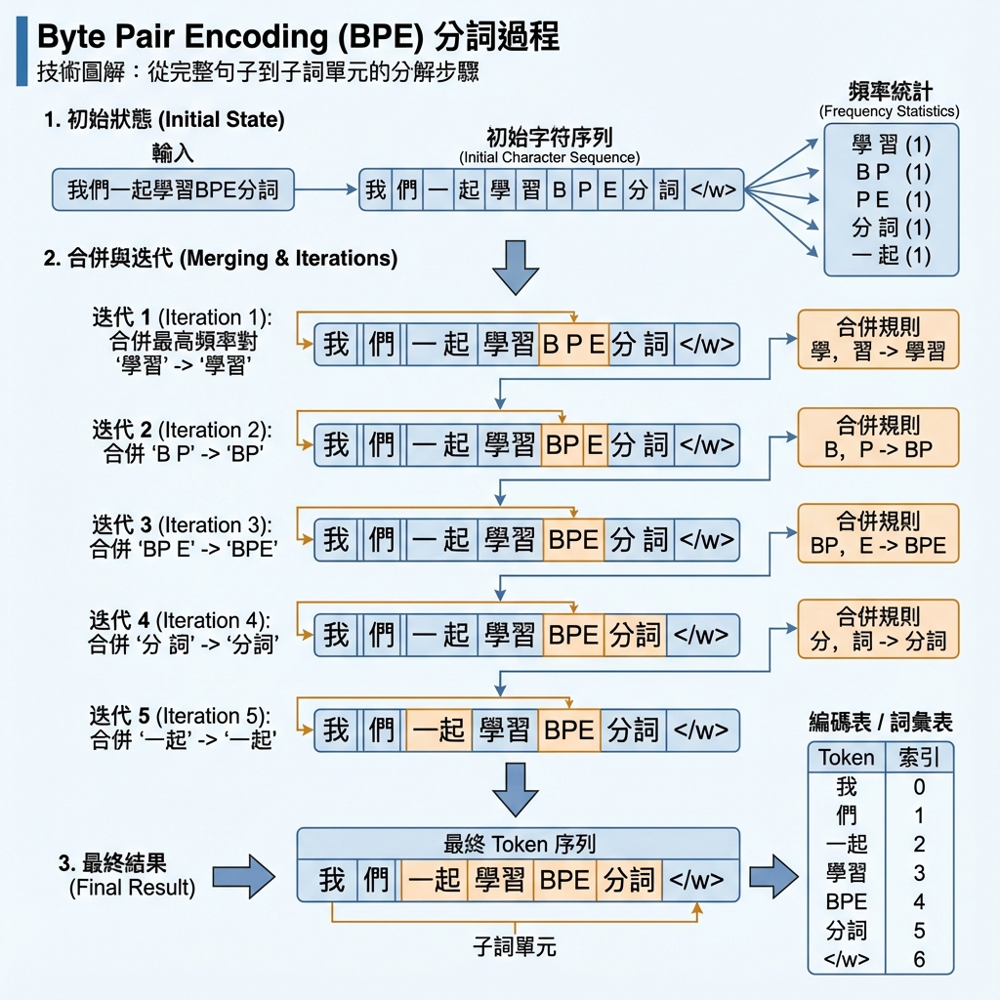

2. Approach（方法論）
GPT-2 的核心方法簡單卻強大：語言建模（Language Modeling）。 但與傳統方法不同的是，GPT-2 試圖證明一件事： 如果模型夠大、資料夠好，語言模型本身就能成為多任務學習者。
"At the core of our approach is language modeling. Language modeling is usually framed as unsupervised distribution estimation from a set of examples (x₁, x₂, ..., xₙ) each composed of variable length sequences of symbols (s₁, s₂, ..., sₙ)."
翻譯：我們方法的核心是語言建模。語言建模通常被框架為從一組範例中進行無監督的分佈估計，每個範例由可變長度的符號序列組成。
🎯 核心思想：任務條件化
"Learning to perform a single task can be expressed in a probabilistic framework as estimating a conditional distribution p(output|input). Since a general system should be able to perform many different tasks, even for the same input, it should condition not only on the input but also on the task to be performed. That is, it should model p(output|input, task)."
翻譯：學習執行單一任務可以用機率框架表達為估計條件分佈 p(輸出|輸入)。由於通用系統應該能執行多種不同任務，即使對於相同輸入，它應該不僅根據輸入進行條件化，還要根據要執行的任務進行條件化。也就是說，它應該建模 p(輸出|輸入，任務)。
多任務學習的核心公式：p(output|input, task) - 根據輸入和任務共同決定輸出
💡 革命性洞察
傳統方法用不同的模型架構或訓練演算法來指定任務。 GPT-2 的創新：用自然語言來指定任務！
🌰 論文中的範例
"For example, a translation training example can be written as the sequence (translate to french, english text, french text). Likewise, a reading comprehension training example can be written as (answer the question, document, question, answer)."
翻譯：例如，翻譯訓練範例可以寫成序列（翻譯成法文，英文文本，法文文本）。同樣地，閱讀理解訓練範例可以寫成（回答問題，文件，問題，答案）。
這種格式讓語言模型能從自然語言中「推斷」出要執行什麼任務！
🔬 理論基礎：無監督包含監督
"Language modeling is also able to, in principle, learn the tasks of McCann et al. (2018) without the need for explicit supervision of which symbols are the outputs to be predicted. Since the supervised objective is the same as the unsupervised objective but only evaluated on a subset of the sequence, the global minimum of the unsupervised objective is also the global minimum of the supervised objective."
翻譯：語言建模原則上也能夠學習 McCann 等人（2018）的任務，而無需明確監督哪些符號是要預測的輸出。由於監督目標與無監督目標相同，只是在序列的子集上進行評估，因此無監督目標的全域最小值也是監督目標的全域最小值。
📐 這意味著什麼？
想像你有一個序列：「翻譯成法文：I love AI → J'aime l'IA」
- 無監督目標：預測整個序列的每個字
- 監督目標：只預測
J'aime l'IA這部分
如果模型學會預測整個序列（無監督），它自然就學會了翻譯任務（監督）！ 這是 GPT-2 的理論基礎。
"Preliminary experiments confirmed that sufficiently large language models are able to perform multitask learning in this toy-ish setup but learning is much slower than in explicitly supervised approaches."
翻譯：初步實驗證實，足夠大的語言模型能夠在這種玩具式設定中執行多任務學習，但學習速度比明確監督的方法慢得多。
2.1. Training Dataset（訓練資料集）
WebText 資料集：從 Reddit 獲得 3+ upvotes 的連結中策展高品質內容
📚 為什麼需要新資料集？
在 GPT-2 之前，大多數語言模型都在單一領域的文本上訓練：
"Most prior work trained language models on a single domain of text, such as news articles (Jozefowicz et al., 2016), Wikipedia (Merity et al., 2016), or fiction books (Kiros et al., 2015). Our approach motivates building as large and diverse a dataset as possible in order to collect natural language demonstrations of tasks in as varied of domains and contexts as possible."
翻譯：大多數先前工作在單一領域的文本上訓練語言模型，例如新聞文章、Wikipedia 或小說書籍。我們的方法需要建立儘可能大且多樣化的資料集，以便在儘可能多樣化的領域和情境中收集任務的自然語言示範。
🌐 Common Crawl 的問題
"A promising source of diverse and nearly unlimited text is web scrapes such as Common Crawl. While these archives are many orders of magnitude larger than current language modeling datasets, they have significant data quality issues. Trinh & Le (2018) used Common Crawl in their work on commonsense reasoning but noted a large amount of documents 'whose content are mostly unintelligible'."
翻譯：網頁爬蟲（如 Common Crawl）是多樣化且幾乎無限文本的理想來源。雖然這些檔案比目前的語言建模資料集大好幾個數量級，但它們有顯著的資料品質問題。Trinh & Le（2018）在常識推理工作中使用了 Common Crawl，但注意到大量文件「內容大多難以理解」。
✨ GPT-2 的解決方案：WebText
"To address this, we created a new web scrape which emphasizes document quality. To do this we only scraped web pages which have been curated/filtered by humans. Manually filtering a full web scrape would be exceptionally expensive so as a starting point, we scraped all outbound links from Reddit, a social media platform, which received at least 3 karma. This can be thought of as a heuristic indicator for whether other users found the link interesting, educational, or just funny."
翻譯：為了解決這個問題，我們創建了一個強調文件品質的新網頁爬蟲。為此，我們只爬取經過人類策展/過濾的網頁。手動過濾完整的網頁爬蟲會非常昂貴，因此作為起點，我們爬取了 Reddit（一個社交媒體平台）上所有至少獲得 3 個 karma（讚）的外部連結。這可以被視為一種啟發式指標，表明其他使用者是否發現該連結有趣、有教育意義，或只是好笑。
💡 WebText 的品質控制策略
這是一個聰明的「群眾外包品質過濾」策略：
- ✅ Reddit 是一個由人類策展內容的平台
- ✅ 至少 3 個讚代表至少有人覺得這內容值得一看
- ✅ 這比 Common Crawl 的「什麼都抓」要精準得多
- ✅ 而且比手動標註便宜太多
📊 WebText 資料集規模
"The resulting dataset, WebText, contains the text subset of these 45 million links. To extract the text from HTML responses we use a combination of the Dragnet (Peters & Lecocq, 2013) and Newspaper content extractors. All results presented in this paper use a preliminary version of WebText which does not include links created after Dec 2017 and which after de-duplication and some heuristic based cleaning contains slightly over 8 million documents for a total of 40 GB of text."
翻譯：產生的資料集 WebText 包含這 4500 萬個連結的文本子集。為了從 HTML 回應中提取文本，我們結合使用了 Dragnet 和 Newspaper 內容提取器。本文中呈現的所有結果都使用 WebText 的初步版本，該版本不包含 2017 年 12 月之後創建的連結，在去重和一些啟發式清理後，包含略超過 800 萬份文件，總計 40 GB 文本。
4500 萬連結
Reddit 上獲得 3+ karma 的外部連結總數
800 萬文件
去重和清理後的最終文件數量
40 GB 文本
最終訓練資料集的大小
移除 Wikipedia
避免與測試集重疊造成「資料污染」
"We also removed all Wikipedia documents from WebText since it is a common data source for other datasets and could complicate analysis due to overlapping training data with test evaluation tasks."
翻譯：我們還從 WebText 中移除了所有 Wikipedia 文件，因為它是其他資料集的常見資料來源，可能因訓練資料與測試評估任務重疊而使分析變得複雜。
📋 Table 1: WebText 中的自然語言示範
WebText 的一個關鍵特性是：它包含了自然發生的任務示範。 論文中舉了一個翻譯的例子：

WebText 中自然出現的翻譯示範 - GPT-2 從這些自然格式學習執行任務
"Brevet Sans Garantie Du Gouvernement", translated to English: "Patented without government warranty"
說明：Table 1 展示了在 WebText 訓練集中自然出現的英法文翻譯示範。這種自然語言格式的翻譯範例，讓語言模型能夠從中「推斷」出翻譯任務。
💡 為什麼這很重要？
這個例子證明了 GPT-2 的核心假設：
- ✅ 網際網路上自然包含各種任務的示範
- ✅ 這些示範以自然語言的形式出現（如 "translated to English:"）
- ✅ 語言模型可以從這些自然示範中學習執行任務
- ✅ 不需要人工標註的「輸入-輸出」對
這就是為什麼 GPT-2 能做 Zero-Shot Translation—— 它在訓練資料中見過類似的翻譯示範格式！
2.2. Input Representation（輸入表示）
BPE（Byte Pair Encoding）將文字拆解為次詞單位（subword units）
🔤 如何讓模型「讀懂」任何文字？
一個通用的語言模型應該能夠處理任何 Unicode 字串。 但如何做到這一點並不簡單。
"A general language model should be able to compute the probability of (and also generate) any string. Current large scale LMs include pre-processing steps such as lowercasing, tokenization, and out-of-vocabulary tokens which restrict the space of model-able strings."
翻譯：通用語言模型應該能夠計算（並生成）任何字串的機率。目前的大規模語言模型包含預處理步驟，如小寫化、分詞和詞彙外標記，這些限制了可建模字串的空間。
⚖️ 字元級 vs 詞級的權衡
"While processing Unicode strings as a sequence of UTF-8 bytes elegantly fulfills this requirement as exemplified in work such as Gillick et al. (2015), current byte-level LMs are not competitive with word-level LMs on large scale datasets such as the One Billion Word Benchmark (Al-Rfou et al., 2018). We observed a similar performance gap in our own attempts to train standard byte-level LMs on WebText."
翻譯：雖然將 Unicode 字串處理為 UTF-8 位元組序列優雅地滿足了這個要求（如 Gillick 等人 2015 年的工作），目前的位元組級語言模型在大規模資料集（如 One Billion Word Benchmark）上無法與詞級語言模型競爭。我們在 WebText 上訓練標準位元組級語言模型的嘗試中也觀察到類似的效能差距。
📊 不同 Tokenization 方法的比較
| 方法 | 優點 | 缺點 |
|---|---|---|
| 字元級 | ✅ 可以處理任何字串 | ❌ 效能較差，序列太長 |
| 詞級 | ✅ 效能好，序列短 | ❌ 無法處理未知詞 |
| BPE（GPT-2） | ✅ 兩者優點兼具 | ✅ 既通用又高效 |
🔧 GPT-2 的 Byte-Level BPE
"Byte Pair Encoding (BPE) (Sennrich et al., 2015) is a practical middle ground between character and word level language modeling which effectively interpolates between word level inputs for frequent symbol sequences and character level inputs for infrequent symbol sequences."
翻譯：Byte Pair Encoding (BPE) 是字元級和詞級語言建模之間的實用中間地帶，有效地在常見符號序列使用詞級輸入，在不常見符號序列使用字元級輸入之間進行插值。
💡 BPE 的運作原理
想像你有這些詞：
dog dog. dog! dog?
傳統 BPE 會為每個變體創建不同的 token，浪費詞彙空間。 GPT-2 的 Byte-Level BPE 改進了這一點：
"Despite its name, reference BPE implementations often operate on Unicode code points and not byte sequences. These implementations would require including the full space of Unicode symbols in order to model all Unicode strings. This would result in a base vocabulary of over 130,000 before any multi-symbol tokens are added. This is prohibitively large compared to the 32,000 to 64,000 token vocabularies often used with BPE. In contrast, a byte-level version of BPE only requires a base vocabulary of size 256."
翻譯：儘管名為 BPE，參考實作通常操作在 Unicode 碼點而非位元組序列上。這些實作需要包含完整的 Unicode 符號空間才能建模所有 Unicode 字串。這會導致在添加任何多符號標記之前，基礎詞彙表就超過 130,000。相比於 BPE 常用的 32,000 到 64,000 個標記詞彙表，這太大了。相比之下，位元組級版本的 BPE 只需要大小為 256 的基礎詞彙表。
✨ GPT-2 的最終方案
"However, directly applying BPE to the byte sequence results in sub-optimal merges due to BPE using a greedy frequency based heuristic for building the token vocabulary. We observed BPE including many versions of common words like dog since they occur in many variations such as dog. dog! dog? . This results in a sub-optimal allocation of limited vocabulary slots and model capacity. To avoid this, we prevent BPE from merging across character categories for any byte sequence. We add an exception for spaces which significantly improves the compression efficiency while adding only minimal fragmentation of words across multiple vocab tokens."
翻譯：然而，直接將 BPE 應用於位元組序列會導致次優的合併，因為 BPE 使用基於頻率的貪婪啟發式來建構標記詞彙表。我們觀察到 BPE 包含了許多常見詞的版本，如 dog，因為它們以許多變體出現，如 dog. dog! dog? 。這導致有限詞彙槽和模型容量的次優分配。為了避免這種情況，我們防止 BPE 跨越任何位元組序列的字元類別進行合併。我們為空格添加了例外，這顯著提高了壓縮效率，同時只增加了極少的跨多個詞彙標記的詞碎片化。
🎯 最終效果
"This input representation allows us to combine the empirical benefits of word-level LMs with the generality of byte-level approaches. Since our approach can assign a probability to any Unicode string, this allows us to evaluate our LMs on any dataset regardless of pre-processing, tokenization, or vocab size."
翻譯：這種輸入表示讓我們能夠結合詞級語言模型的實證優勢與位元組級方法的通用性。由於我們的方法可以為任何 Unicode 字串分配機率，這使我們能夠在任何資料集上評估語言模型，無論預處理、分詞或詞彙表大小如何。
📝 本章重點回顧
- 核心方法：語言建模 + 任務條件化，用自然語言指定任務
- 理論基礎：無監督目標的全域最小值包含監督目標的全域最小值
- WebText 資料集：800萬文件，40GB，從 Reddit 3+ karma 連結策展
- 品質控制：群眾外包品質過濾，移除 Wikipedia 避免污染
- Byte-Level BPE：256 基礎詞彙，兼具通用性與效率
- 防止跨類別合併：避免 dog. dog! dog? 產生不同 token
🎯 為什麼這些很重要？
WebText 的品質策展證明了「資料品質比數量重要」——這為後續的 GPT-3、GPT-4 等模型的資料工程奠定了基礎。
Byte-Level BPE 成為了 GPT 系列的標準 tokenization 方法，一直沿用到今天的 GPT-4。